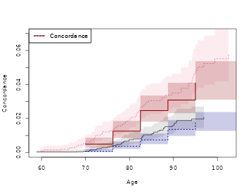

A practical guide to Human Genetics with Lifetime Data
Klaus Holst & Thomas Scheike
2021-09-05
Source:vignettes/time-to-event-family-studies-arev.Rmd
time-to-event-family-studies-arev.RmdThis vignette demonstrates how to analyze familial resemblance for twins using the {}-package and is accompanying the review by Holst and Scheike (2020).
We consider a data-set in that resembles the data of that were based on the NorTwinCan a collaborative research project studying the genetic and environmental components of prostate cancer. The data comprises around 18,000 DZ twins and 11,000 MZ twins. It was a population based register study based on the Danish, Finnish, Norwegian, and Swedish twin registries.
We first illustrate a hazards based analysis to show how one would study dependence in survival data. This needs to be done under assumptions about independent competing risks when the outcome of interest is observed subject to competing risks (here death).
This seems reasonable here since the occurrence of cancer prior to death only contains weak association with the risk of death for the other twin, and vice-versa.
First looking at the data
library(mets)
data(prt)
dtable(prt,~status+cancer)
#>
#> cancer 0 1
#> status
#> 0 21283 0
#> 1 6997 0
#> 2 0 942
dtable(prt,~zyg+country,level=1)
#>
#> zyg
#> DZ MZ
#> 17991 11231
#>
#> country
#> Denmark Finland Norway Sweden
#> 9671 3926 4107 11518we see that there are 21283 censorings and 6997 deaths (prior to cancer) and a total of 942 prostate cancers. Approximately half the data consist of DZ twins. In addition we see that there are around 10000 twins from Denmark and Sweden, and only 4000 from Norway and Finland, respectively.
Survival
Under assumption of random effects acting independently on different cause specific hazards we can analyse competing risks data considering the cause-specific hazard. Typically, this can be questionable and the cumulative incidence modelling below does not rely on this assumption.
We consider the cause specific hazard of cancer in the competing risks model with death and cancer.
First estimating the marginal hazards for each country.
library(mets)
data(prt)
# Marginal Cox model here stratified on country without covariates
margph <- phreg(Surv(time,cancer)~strata(country)+cluster(id),data=prt)
plot(margph)
We see that the marginal of Denmark in particular is quite different.
Then we fit a two-stage random effects models with country specific marginals and random-effects variances that differ for MZ and DZ twins.
# Clayton-Oakes, MLE , overall variance
fitco1<-twostageMLE(margph,data=prt,theta=2.7)
summary(fitco1)
#> Dependence parameter for Clayton-Oakes model
#> Variance of Gamma distributed random effects
#> $estimates
#> Coef. SE z P-val Kendall tau SE
#> dependence1 2.782962 0.4225572 6.586001 4.518319e-11 0.5818491 0.0369421
#>
#> $type
#> NULL
#>
#> attr(,"class")
#> [1] "summary.mets.twostage"
fitco2 <- survival.twostage(margph,data=prt,theta=2.7,clusters=prt$id,var.link=0)
summary(fitco2)
#> Dependence parameter for Clayton-Oakes model
#> Variance of Gamma distributed random effects
#> $estimates
#> Coef. SE z P-val Kendall tau SE
#> dependence1 2.782962 0.4225529 6.586069 4.516254e-11 0.5818491 0.03694172
#>
#> $type
#> [1] "clayton.oakes"
#>
#> attr(,"class")
#> [1] "summary.mets.twostage"
## now with different random effects for MZ and DZ
mm <- model.matrix(~-1+factor(zyg),prt)
fitco3<-twostageMLE(margph,data=prt,theta=1,theta.des=mm)
summary(fitco3)
#> Dependence parameter for Clayton-Oakes model
#> Variance of Gamma distributed random effects
#> $estimates
#> Coef. SE z P-val Kendall tau SE
#> factor(zyg)DZ 1.318966 0.3861577 3.415614 6.363831e-04 0.3974027 0.07011148
#> factor(zyg)MZ 5.421921 0.9626267 5.632423 1.776956e-08 0.7305280 0.03495065
#>
#> $type
#> NULL
#>
#> attr(,"class")
#> [1] "summary.mets.twostage"
fitco4 <- survival.twostage(margph,data=prt,theta=1,clusters=prt$id,var.link=0,theta.des=mm)
summary(fitco4)
#> Dependence parameter for Clayton-Oakes model
#> Variance of Gamma distributed random effects
#> $estimates
#> Coef. SE z P-val Kendall tau SE
#> factor(zyg)DZ 1.318966 0.3861745 3.415466 6.367306e-04 0.3974027 0.07011454
#> factor(zyg)MZ 5.421920 0.9625027 5.633148 1.769493e-08 0.7305280 0.03494615
#>
#> $type
#> [1] "clayton.oakes"
#>
#> attr(,"class")
#> [1] "summary.mets.twostage"
round(estimate(coef=fitco4$coef,vcov=fitco4$var.theta)$coefmat[,c(1,3:4)],2)
#> Estimate 2.5% 97.5%
#> factor(zyg)DZ 1.32 0.56 2.08
#> factor(zyg)MZ 5.42 3.54 7.31
## mz kendalls tau
kendall.ClaytonOakes.twin.ace(fitco4$theta[2],0,K=10000)$mz.kendall
#> [1] 0.7232779
## dz kendalls tau
kendall.ClaytonOakes.twin.ace(fitco4$theta[1],0,K=10000)$mz.kendall
#> [1] 0.3946366The dependence of MZ twins is much stronger, and is summarized by a variance at \(5.4\) in contrast to the \(DZ\) variance at \(1.3\).
Now we look at the polygenic modelling for survival data, here applied to the cause specific hazards.
### setting up design for random effects and parameters of random effects
desace <- twin.polygen.design(prt,type="ace")
### ace model
fitace <- survival.twostage(margph,data=prt,theta=1,
clusters=prt$id,var.link=0,model="clayton.oakes",
numDeriv=1,random.design=desace$des.rv,theta.des=desace$pardes)
summary(fitace)
#> Dependence parameter for Clayton-Oakes model
#> Variance of Gamma distributed random effects
#> $estimates
#> Coef. SE z P-val Kendall tau SE
#> dependence1 7.223855 1.841525 3.922757 8.754161e-05 0.7831709 0.04328951
#> dependence2 -1.582396 1.088423 -1.453843 1.459898e-01 -3.7892257 12.48240540
#>
#> $type
#> [1] "clayton.oakes"
#>
#> $h
#> Estimate Std.Err 2.5% 97.5% P-value
#> [1,] 1.2805 0.1698 0.9477 1.61324 4.615e-14
#> [2,] -0.2805 0.1698 -0.6132 0.05226 9.850e-02
#>
#> $vare
#> NULL
#>
#> $vartot
#> Estimate Std.Err 2.5% 97.5% P-value
#> p1 5.641 0.9894 3.702 7.581 1.184e-08
#>
#> attr(,"class")
#> [1] "summary.mets.twostage"
### ace model with positive random effects variances
fitacee <- survival.twostage(margph,data=prt,theta=1,
clusters=prt$id,var.link=1,model="clayton.oakes",
numDeriv=1,random.design=desace$des.rv,theta.des=desace$pardes)
summary(fitacee)
#> Dependence parameter for Clayton-Oakes model
#> Variance of Gamma distributed random effects
#> With log-link
#> $estimates
#> log-Coef. SE z P-val Kendall tau
#> dependence1 1.619814 1.630256e-01 9.935950e+00 0 7.163986e-01
#> dependence2 -41.699466 3.268555e-20 -1.275777e+21 0 3.882594e-19
#> SE
#> dependence1 3.312218e-02
#> dependence2 1.269047e-38
#>
#> $type
#> [1] "clayton.oakes"
#>
#> $h
#> Estimate Std.Err 2.5% 97.5% P-value
#> [1,] 1.000e+00 0.000e+00 1.000e+00 1.000e+00 0.000e+00
#> [2,] 1.537e-19 2.506e-20 1.046e-19 2.028e-19 8.569e-10
#>
#> $vare
#> Estimate Std.Err 2.5% 97.5% P-value
#> [1,] 5.052e+00 8.236e-01 3.438e+00 6.666e+00 8.569e-10
#> [2,] 7.765e-19 2.538e-38 7.765e-19 7.765e-19 0.000e+00
#>
#> $vartot
#> Estimate Std.Err 2.5% 97.5% P-value
#> p1 5.052 0.8236 3.438 6.666 8.569e-10
#>
#> attr(,"class")
#> [1] "summary.mets.twostage"
### ae model
desae <- twin.polygen.design(prt,type="ae")
fitae <- survival.twostage(margph,data=prt,theta=1,
clusters=prt$id,var.link=0,model="clayton.oakes",
numDeriv=1,random.design=desae$des.rv,theta.des=desae$pardes)
summary(fitae)
#> Dependence parameter for Clayton-Oakes model
#> Variance of Gamma distributed random effects
#> $estimates
#> Coef. SE z P-val Kendall tau SE
#> dependence1 5.05215 0.8236912 6.133549 8.594003e-10 0.7163986 0.03312465
#>
#> $type
#> [1] "clayton.oakes"
#>
#> $h
#> Estimate Std.Err 2.5% 97.5% P-value
#> [1,] 1 0 1 1 0
#>
#> $vare
#> NULL
#>
#> $vartot
#> Estimate Std.Err 2.5% 97.5% P-value
#> p1 5.052 0.8237 3.438 6.667 8.594e-10
#>
#> attr(,"class")
#> [1] "summary.mets.twostage"
### de model
desde <- twin.polygen.design(prt,type="de")
fitde <- survival.twostage(margph,data=prt,theta=1,
clusters=prt$id,var.link=0,model="clayton.oakes",
numDeriv=1,random.design=desde$des.rv,theta.des=desde$pardes)
summary(fitde)
#> Dependence parameter for Clayton-Oakes model
#> Variance of Gamma distributed random effects
#> $estimates
#> Coef. SE z P-val Kendall tau SE
#> dependence1 5.940643 0.9837336 6.038873 1.551941e-09 0.7481312 0.03120299
#>
#> $type
#> [1] "clayton.oakes"
#>
#> $h
#> Estimate Std.Err 2.5% 97.5% P-value
#> [1,] 1 0 1 1 0
#>
#> $vare
#> NULL
#>
#> $vartot
#> Estimate Std.Err 2.5% 97.5% P-value
#> p1 5.941 0.9837 4.013 7.869 1.552e-09
#>
#> attr(,"class")
#> [1] "summary.mets.twostage"The DE model fits quite well. In summary all shared variance is due to genes and there is no suggestion of a shared environmental effect.
Concordance and Casewise
First we estimate the concordance of joint prostate cancer. The two-twins are censored at the same time, otherwise we would enforce this in the data by artificially censor both twins at the first censoring time. Given, however, that we have the same-censoring assumption satisfied we can do the stanadar Aalen-Johansen product-limit estimator of the concordance probabilities for MZ and DZ twins.
For simplicity we do not do this for each country even though as we show there are big differences between the countries.
library(mets)
data(prt)
prt <- force.same.cens(prt,cause="status")
dtable(prt,~status+cancer)
#>
#> cancer 0 1
#> status
#> 0 21580 77
#> 1 6700 0
#> 2 0 865
dtable(prt,~status+country)
#>
#> country Denmark Finland Norway Sweden
#> status
#> 0 7394 2622 3154 8487
#> 1 2140 1138 830 2592
#> 2 137 166 123 439
dtable(prt,~zyg+country)
#>
#> country Denmark Finland Norway Sweden
#> zyg
#> DZ 6191 2833 2393 6574
#> MZ 3480 1093 1714 4944
## cumulative incidence with cluster standard errors.
cif1 <- cif(Event(time,status)~strata(country)+cluster(id),prt,cause=2)
plot(cif1,se=1)
cifa <- cif(Event(time,status)~+1,prt,cause=2)
### concordance estimator, ignoring country differences.
p11 <- bicomprisk(Event(time,status)~strata(zyg)+id(id),data=prt,cause=c(2,2))
#> Strata 'DZ'
#> Strata 'MZ'
p11mz <- p11$model$"MZ"
p11dz <- p11$model$"DZ"
par(mfrow=c(1,2))
## Concordance
plot(p11mz,ylim=c(0,0.1));
plot(p11dz,ylim=c(0,0.1));Now we compare the concordance to the marginals to get a measure that takes the marginals into account when evaluating the strength of the association.
library(prodlim)
outm <- prodlim(Hist(time,status)~+1,data=prt)
cifzyg <- cif(Event(time,status)~+strata(zyg)+cluster(id),data=prt,cause=2)
cifprt <- cif(Event(time,status)~country+cluster(id),data=prt,cause=2)
times <- 70:100
cifmz <- predict(outm,cause=2,time=times,newdata=data.frame(zyg="MZ")) ## cause is 2 (second cause)
cifdz <- predict(outm,cause=2,time=times,newdata=data.frame(zyg="DZ"))
### concordance for MZ and DZ twins<
cc <- bicomprisk(Event(time,status)~strata(zyg)+id(id),data=prt,cause=c(2,2),prodlim=TRUE)
#> Strata 'DZ'
#> Strata 'MZ'
ccdz <- cc$model$"DZ"
ccmz <- cc$model$"MZ"
cdz <- casewise(ccdz,outm,cause.marg=2)
cmz <- casewise(ccmz,outm,cause.marg=2)
dd <- bicompriskData(Event(time,status)~country+strata(zyg)+id(id),data=prt,cause=c(2,2))
conczyg <- cif(Event(time,status)~strata(zyg)+cluster(id),data=dd,cause=1)
par(mfrow=c(1,2))
plot(conczyg,se=TRUE,col=cols[2:1], lty=ltys[2:1], legend=FALSE,xlab="Age",ylab="Concordance")
legend("topleft",c("concordance-MZ","concordance-DZ"),col=cols[1:2],lty=ltys[1:2])
plot(cmz,ci=NULL,ylim=c(0,.8),xlim=c(70,97),legend=FALSE,col=cols[c(1,3,3)],lty=ltys[c(1,3,3)],
ylab="Casewise",xlab="Age")
plot(cdz,ci=NULL,ylim=c(0,.8),xlim=c(70,97),legend=FALSE,ylab="Casewise",xlab="Age",
col=c(cols[2],NA,NA), lty=ltys[c(2,3,3)], add=TRUE)
with(data.frame(cmz$casewise),plotConfRegionSE(time,casewise.conc,se.casewise,col=cols[1]))
with(data.frame(cdz$casewise),plotConfRegionSE(time,casewise.conc,se.casewise,col=cols[2]))
legend("topleft",c("casewise-MZ","casewise-DZ","marginal"),col=cols, lty=ltys, bg="white")
summary(cdz)
#> Casewise concordance and standard errors
#> time casewise conc se casewise
#> [1,] 59.5 0.0866 0.0865
#> [2,] 60.5 0.0659 0.0659
#> [3,] 61.6 0.0593 0.0593
#> [4,] 62.7 0.0483 0.0483
#> [5,] 63.7 0.0358 0.0358
#> [6,] 64.8 0.0279 0.0279
#> [7,] 65.8 0.0223 0.0223
#> [8,] 66.9 0.0197 0.0197
#> [9,] 68.0 0.0415 0.0297
#> [10,] 69.0 0.0335 0.0240
#> [11,] 70.1 0.0452 0.0264
#> [12,] 71.1 0.0855 0.0352
#> [13,] 72.2 0.0728 0.0300
#> [14,] 73.2 0.0888 0.0317
#> [15,] 74.3 0.1010 0.0321
#> [16,] 75.4 0.1020 0.0310
#> [17,] 76.4 0.1130 0.0318
#> [18,] 77.5 0.1230 0.0320
#> [19,] 78.5 0.1400 0.0334
#> [20,] 79.6 0.1470 0.0332
#> [21,] 80.7 0.1530 0.0329
#> [22,] 81.7 0.1460 0.0307
#> [23,] 82.8 0.1470 0.0298
#> [24,] 83.8 0.1600 0.0307
#> [25,] 84.9 0.1470 0.0282
#> [26,] 86.0 0.1620 0.0297
#> [27,] 87.0 0.1680 0.0300
#> [28,] 88.1 0.1820 0.0311
#> [29,] 89.1 0.1760 0.0301
#> [30,] 90.2 0.1950 0.0323
#> [31,] 91.2 0.2040 0.0332
#> [32,] 92.3 0.1970 0.0321
#> [33,] 93.4 0.1940 0.0315
#> [34,] 94.4 0.1970 0.0318
#> [35,] 95.5 0.1940 0.0314
#> [36,] 96.5 0.1930 0.0312
#> [37,] 97.6 0.2040 0.0330
#> [38,] 98.7 0.2010 0.0325
#> [39,] 99.7 0.1990 0.0322
#> [40,] 101.0 0.1980 0.0321
#> [41,] 102.0 0.1950 0.0316
#> [42,] 103.0 0.1940 0.0314
#> [43,] 104.0 0.1940 0.0314
#> [44,] 105.0 0.1930 0.0312
#> [45,] 106.0 0.1920 0.0311
#> [46,] 107.0 0.1920 0.0311
#> [47,] 108.0 0.1910 0.0309
summary(cmz)
#> Casewise concordance and standard errors
#> time casewise conc se casewise
#> [1,] 60.6 0.519 0.2590
#> [2,] 61.6 0.466 0.2330
#> [3,] 62.7 0.380 0.1900
#> [4,] 63.7 0.285 0.1420
#> [5,] 64.8 0.286 0.1280
#> [6,] 65.8 0.228 0.1020
#> [7,] 66.9 0.295 0.1120
#> [8,] 67.9 0.306 0.1090
#> [9,] 68.9 0.327 0.1040
#> [10,] 70.0 0.338 0.0981
#> [11,] 71.0 0.345 0.0926
#> [12,] 72.1 0.399 0.0946
#> [13,] 73.1 0.414 0.0909
#> [14,] 74.2 0.426 0.0874
#> [15,] 75.2 0.388 0.0798
#> [16,] 76.3 0.391 0.0773
#> [17,] 77.3 0.410 0.0769
#> [18,] 78.4 0.392 0.0723
#> [19,] 79.4 0.410 0.0721
#> [20,] 80.5 0.423 0.0714
#> [21,] 81.5 0.400 0.0666
#> [22,] 82.6 0.442 0.0685
#> [23,] 83.6 0.446 0.0676
#> [24,] 84.7 0.433 0.0643
#> [25,] 85.7 0.413 0.0612
#> [26,] 86.8 0.389 0.0578
#> [27,] 87.8 0.396 0.0578
#> [28,] 88.9 0.396 0.0573
#> [29,] 89.9 0.399 0.0574
#> [30,] 91.0 0.386 0.0556
#> [31,] 92.0 0.400 0.0570
#> [32,] 93.1 0.393 0.0560
#> [33,] 94.1 0.415 0.0590
#> [34,] 95.2 0.477 0.0669
#> [35,] 96.2 0.493 0.0690
#> [36,] 97.3 0.511 0.0714
#> [37,] 98.3 0.507 0.0708
#> [38,] 99.4 0.500 0.0699
#> [39,] 100.0 0.525 0.0739
#> [40,] 101.0 0.520 0.0731
#> [41,] 103.0 0.514 0.0723
#> [42,] 104.0 0.541 0.0767
#> [43,] 105.0 0.541 0.0767
Cpred(cmz$casewise,80)
#> xval casewise conc se casewise
#> [1,] 80 0.4096715 0.07211013
Cpred(cdz$casewise,80)
#> xval casewise conc se casewise
#> [1,] 80 0.1469487 0.03321234
dd <- bicompriskData(Event(time,status)~country+strata(zyg)+id(id),data=prt,cause=c(2,2))
conczyg <- cif(Event(time,status)~strata(zyg)+cluster(id),data=dd,cause=1)
par(mfrow=c(1,2))
plot(conczyg,se=TRUE,legend=FALSE,xlab="Age",ylab="Concordance")
legend("topleft",c("concordance-DZ","concordance-MZ"),col=c(1,2),lty=1)
plot(cmz,ci=NULL,ylim=c(0,0.6),xlim=c(70,100),legend=FALSE,col=c(2,3,3),ylab="Casewise",xlab="Age",lty=c(1,3))
plot(cdz,ci=NULL,ylim=c(0,0.6),xlim=c(70,100),legend=FALSE,ylab="Casewise",xlab="Age",
col=c(1,3,3), add=TRUE, lty=c(2,3))
legend("topleft",c("casewise-MZ","casewise-DZ","marginal"),col=c(2,1,3),lty=1)
with(data.frame(cmz$casewise),plotConfRegionSE(time,casewise.conc,se.casewise,col=2))
with(data.frame(cdz$casewise),plotConfRegionSE(time,casewise.conc,se.casewise,col=1))
The standard errors above are slightly off since they only reflect the uncertainty from the concordance estimation. This can be improved by doing specific calculations for a specific time-point uisng the binomial regression function that gives and iid decomposition for the paramters. We thus apply the binomial regression to estimate the concordance as well as the marginal, and combine the iid decompositions when estimating the standard error. We also do this ignoring country differences.
### new version of Casewise for specific time-point based on binreg
dd <- bicompriskData(Event(time,status)~country+strata(zyg)+id(id),data=prt,cause=c(2,2))
newdata <- data.frame(zyg=c("DZ","MZ"),id=1)
## concordance
bcif1 <- binreg(Event(time,status)~-1+factor(zyg)+cluster(id),dd,time=80,cause=1,cens.model=~strata(zyg))
pconc <- predict(bcif1,newdata)
## marginal estimates
mbcif1 <- binreg(Event(time,status)~cluster(id),prt,time=80,cause=2)
mc <- predict(mbcif1,newdata)
### casewise with improved se's from log-scale
cse <- binregCasewise(bcif1,mbcif1)
cse
#> $coef
#> Estimate 2.5% 97.5%
#> p1 0.1586277 0.1029195 0.2444898
#> p2 0.4041311 0.2843829 0.5743030
#>
#> $logcoef
#> Estimate Std.Err 2.5% 97.5% P-value
#> p1 -1.841 0.2207 -2.274 -1.4086 7.331e-17
#> p2 -0.906 0.1793 -1.257 -0.5546 4.346e-07It can be useful also to simply model the concordance given covariates, and in this case we might find it important to adjust for country, or to see if the differences between MZ and DZ are comparable across contries even though clearly DK has a much lower cumulative incidence of prostate cancer.
### semi-parametric modelling of concordance
dd <- bicompriskData(Event(time,status)~country+strata(zyg)+id(id),data=prt,cause=c(2,2))
regconc <- cifreg(Event(time,status)~country*zyg,data=dd,prop=NULL)
regconc
#> Call:
#> cifreg(formula = Event(time, status) ~ country * zyg, data = dd,
#> propodds = NULL)
#>
#> n events
#> 14222 106
#>
#> 14222 clusters
#> coeffients:
#> Estimate S.E. dU^-1/2 P-value
#> countryFinland 2.20738 0.76281 0.76379 0.0038
#> countryNorway 2.31658 0.78992 0.79059 0.0034
#> countrySweden 2.02237 0.73973 0.74002 0.0063
#> zygMZ 2.30872 0.77397 0.77460 0.0029
#> countryFinland:zygMZ -1.26737 0.87061 0.87193 0.1455
#> countryNorway:zygMZ -2.14613 0.94349 0.94430 0.0229
#> countrySweden:zygMZ -1.32560 0.82195 0.82282 0.1068
#>
#> exp(coeffients):
#> Estimate 2.5% 97.5%
#> countryFinland 9.091833 2.038674 40.5467
#> countryNorway 10.140896 2.156230 47.6933
#> countrySweden 7.556217 1.772747 32.2079
#> zygMZ 10.061559 2.207303 45.8637
#> countryFinland:zygMZ 0.281571 0.051112 1.5511
#> countryNorway:zygMZ 0.116936 0.018401 0.7431
#> countrySweden:zygMZ 0.265643 0.053046 1.3303
### interaction test
wald.test(regconc,coef.null=5:7)
#> lin.comb se lower upper pval
#> [1,] -1.267372 0.8706072 -2.973731 0.4389867 0.14546630
#> [2,] -2.146126 0.9434944 -3.995341 -0.2969109 0.02292653
#> [3,] -1.325604 0.8219473 -2.936591 0.2853834 0.10679668
#>
#> Wald test
#>
#> data:
#> chisq = 5.2661, df = 3, p-value = 0.1533
regconc <- cifreg(Event(time,status)~country+zyg,data=dd,prop=NULL)
regconc
#> Call:
#> cifreg(formula = Event(time, status) ~ country + zyg, data = dd,
#> propodds = NULL)
#>
#> n events
#> 14222 106
#>
#> 14222 clusters
#> coeffients:
#> Estimate S.E. dU^-1/2 P-value
#> countryFinland 1.29246 0.34863 0.35151 0.0002
#> countryNorway 0.93336 0.39545 0.39366 0.0183
#> countrySweden 1.07439 0.31940 0.31876 0.0008
#> zygMZ 1.01055 0.19995 0.19877 0.0000
#>
#> exp(coeffients):
#> Estimate 2.5% 97.5%
#> countryFinland 3.6417 1.8389 7.2121
#> countryNorway 2.5430 1.1715 5.5203
#> countrySweden 2.9282 1.5658 5.4762
#> zygMZ 2.7471 1.8564 4.0651
## logistic link
logitregconc <- cifreg(Event(time,status)~country+zyg,data=dd)
summary(logitregconc)
#>
#> n events
#> 14222 106
#>
#> 14222 clusters
#> coeffients:
#> Estimate S.E. dU^-1/2 P-value
#> countryFinland 1.30427 0.35262 0.35146 0.0002
#> countryNorway 0.94077 0.39999 0.39365 0.0187
#> countrySweden 1.08494 0.32247 0.31871 0.0008
#> zygMZ 1.02335 0.20283 0.19873 0.0000
#>
#> exp(coeffients):
#> Estimate 2.5% 97.5%
#> countryFinland 3.6850 1.8462 7.3552
#> countryNorway 2.5620 1.1698 5.6111
#> countrySweden 2.9593 1.5729 5.5676
#> zygMZ 2.7825 1.8697 4.1408
### library(Publish)
### publish(round(summary(logitregconc)$exp.coef[,-c(2,5)],2),latex=TRUE,digits=2)Competing risk using additive Gamma
Here we do the cumulative incidence random effects modelling
times <- seq(50,90,by=10)
cif1 <- comp.risk(Event(time,status)~-1+factor(country)+cluster(id),prt,
cause=2,times=times,max.clust=NULL)
mm <- model.matrix(~-1+factor(zyg),prt)
out1<-random.cif(cif1,data=prt,cause1=2,cause2=2,theta=1,
theta.des=mm,same.cens=TRUE,step=0.5)
summary(out1)
#> Random effect variance for variation due to clusters
#>
#> Cause 2 and cause 2
#> Coef. SE z P-val Cross odds ratio
#> factor(zyg)DZ 1.034939 0.4379824 2.362969 0.0181292052 2.034939
#> factor(zyg)MZ 3.877446 1.1338630 3.419678 0.0006269539 4.877446
#> SE
#> factor(zyg)DZ 0.4379824
#> factor(zyg)MZ 1.1338630
round(estimate(coef=out1$theta,vcov=out1$var.theta)$coefmat[,c(1,3:4)],2)
#> Estimate 2.5% 97.5%
#> p1 1.03 0.18 1.89
#> p2 3.88 1.66 6.10
desace <- twin.polygen.design(prt,type="ace")
outacem <- Grandom.cif(cif1,data=prt,cause1=2,cause2=2,
same.cens=TRUE,theta=c(0.45,0.15),var.link=0,
step=0.5,theta.des=desace$pardes,random.design=desace$des.rv)
outacem$score
#> [,1]
#> [1,] 4.494686e-07
#> [2,] 2.722077e-08
summary(outacem)
#> Random effect parameters for additive gamma random effects
#>
#> Cause 2 and cause 2
#>
#>
#> Coef. SE z P-val
#> [1,] 0.3360 0.0905 3.71 0.000206
#> [2,] -0.0798 0.0673 -1.19 0.236000
#> $estimate
#> Coef. SE z P-val
#> [1,] 0.3360 0.0905 3.71 0.000206
#> [2,] -0.0798 0.0673 -1.19 0.236000
#>
#> $h
#> Estimate Std.Err 2.5% 97.5% P-value
#> p1 1.3118 0.2941 0.7354 1.8881 8.157e-06
#> p2 -0.3118 0.2941 -0.8881 0.2646 2.890e-01
### variances
estimate(coef=outacem$theta,vcov=outacem$var.theta,f=function(p) p/sum(p)^2)
#> Estimate Std.Err 2.5% 97.5% P-value
#> p1 5.125 2.278 0.6612 9.590 0.02443
#> p2 -1.218 1.355 -3.8737 1.437 0.36862
desae <- twin.polygen.design(prt,type="ae")
outaem <- Grandom.cif(cif1,data=prt,cause1=2,cause2=2,
same.cens=TRUE,theta=c(0.45,0.15),var.link=0,
step=0.5,theta.des=desae$pardes,random.design=desae$des.rv)
outaem$score
#> [,1]
#> [1,] 3.667445e-07
summary(outaem)
#> Random effect parameters for additive gamma random effects
#>
#> Cause 2 and cause 2
#>
#>
#> Coef. SE z P-val
#> [1,] 0.291 0.0723 4.02 5.7e-05
#> $estimate
#> Coef. SE z P-val
#> [1,] 0.291 0.0723 4.02 5.7e-05
#>
#> $h
#> Estimate Std.Err 2.5% 97.5% P-value
#> p1 1 0 1 1 0
estimate(coef=outaem$theta,vcov=outaem$var.theta,f=function(p) p/sum(p)^2)
#> Estimate Std.Err 2.5% 97.5% P-value
#> p1 3.438 0.8542 1.764 5.112 5.702e-05
desde <- twin.polygen.design(prt,type="de")
outaem <- Grandom.cif(cif1,data=prt,cause1=2,cause2=2,
same.cens=TRUE,theta=c(0.35),var.link=0,
step=0.5,theta.des=desde$pardes,random.design=desde$des.rv)
outaem$score
#> [,1]
#> [1,] 4.00184e-07
summary(outaem)
#> Random effect parameters for additive gamma random effects
#>
#> Cause 2 and cause 2
#>
#>
#> Coef. SE z P-val
#> [1,] 0.245 0.0656 3.73 0.000194
#> $estimate
#> Coef. SE z P-val
#> [1,] 0.245 0.0656 3.73 0.000194
#>
#> $h
#> Estimate Std.Err 2.5% 97.5% P-value
#> p1 1 0 1 1 0
estimate(coef=outaem$theta,vcov=outaem$var.theta,f=function(p) p/sum(p)^2)
#> Estimate Std.Err 2.5% 97.5% P-value
#> p1 4.088 1.097 1.938 6.239 0.0001944
times <- 90
cif1 <- comp.risk(Event(time,status)~-1+factor(country)+cluster(id),prt,
cause=2,times=times,max.clust=NULL)
mm <- model.matrix(~-1+factor(zyg),prt)
out1<-random.cif(cif1,data=prt,cause1=2,cause2=2,theta=1,
theta.des=mm,same.cens=TRUE,step=0.5)
summary(out1)
#> Random effect variance for variation due to clusters
#>
#> Cause 2 and cause 2
#> Coef. SE z P-val Cross odds ratio
#> factor(zyg)DZ 0.8737827 0.4091680 2.135511 0.032719303 1.873783
#> factor(zyg)MZ 3.1990114 0.9791185 3.267236 0.001086031 4.199011
#> SE
#> factor(zyg)DZ 0.4091680
#> factor(zyg)MZ 0.9791185
round(estimate(coef=out1$theta,vcov=out1$var.theta)$coefmat[,c(1,3:4)],2)
#> Estimate 2.5% 97.5%
#> p1 0.87 0.07 1.68
#> p2 3.20 1.28 5.12
desde <- twin.polygen.design(prt,type="de")
outaem <- Grandom.cif(cif1,data=prt,cause1=2,cause2=2,
same.cens=TRUE,theta=c(0.35),var.link=0,
step=0.5,theta.des=desde$pardes,random.design=desde$des.rv)
outaem$score
#> [,1]
#> [1,] 4.250029e-07
summary(outaem)
#> Random effect parameters for additive gamma random effects
#>
#> Cause 2 and cause 2
#>
#>
#> Coef. SE z P-val
#> [1,] 0.299 0.0842 3.55 0.000384
#> $estimate
#> Coef. SE z P-val
#> [1,] 0.299 0.0842 3.55 0.000384
#>
#> $h
#> Estimate Std.Err 2.5% 97.5% P-value
#> p1 1 0 1 1 0
estimate(coef=outaem$theta,vcov=outaem$var.theta,f=function(p) p/sum(p)^2)
#> Estimate Std.Err 2.5% 97.5% P-value
#> p1 3.346 0.9422 1.499 5.192 0.0003842Competing risk modeling using the Liabilty Threshold model
First we fit the bivariate probit model (same marginals in MZ and DZ twins but different correlation parameter). Here we evaluate the risk of getting cancer before the last double cancer event (97 years)
rm(prt)
data(prt)
prt0 <- force.same.cens(prt, cause="status", cens.code=0, time="time", id="id")
prt0$country <- relevel(prt0$country, ref="Sweden")
prt_wide <- fast.reshape(prt0, id="id", num="num", varying=c("time","status","cancer"))
prt_time <- subset(prt_wide, cancer1 & cancer2, select=c(time1, time2, zyg))
tau <- 95
tt <- seq(70, tau, by=1) ## Time points to evaluate model in
b0 <- bptwin.time(cancer ~ 1, data=prt0, id="id", zyg="zyg", DZ="DZ", type="cor",
cens.formula=Surv(time,status==0)~zyg, breaks=tau)
summary(b0)
#>
#> Estimate Std.Err Z p-value
#> (Intercept) -1.348188 0.026276 -51.3086 < 2.2e-16 ***
#> atanh(rho) MZ 0.735992 0.087838 8.3789 < 2.2e-16 ***
#> atanh(rho) DZ 0.353023 0.068234 5.1737 2.295e-07 ***
#> ---
#> Signif. codes: 0 '***' 0.001 '**' 0.01 '*' 0.05 '.' 0.1 ' ' 1
#>
#> Total MZ/DZ Complete pairs MZ/DZ
#> 1994/3618 997/1809
#>
#> Estimate 2.5% 97.5%
#> Tetrachoric correlation MZ 0.62672 0.51081 0.72024
#> Tetrachoric correlation DZ 0.33905 0.21584 0.45164
#>
#> MZ:
#> Estimate 2.5% 97.5%
#> Concordance 0.03504 0.02779 0.04409
#> Casewise Concordance 0.39458 0.31876 0.47584
#> Marginal 0.08880 0.08086 0.09743
#> Rel.Recur.Risk 4.44351 3.50521 5.38182
#> log(OR) 2.34131 1.87105 2.81157
#> DZ:
#> Estimate 2.5% 97.5%
#> Concordance 0.01952 0.01449 0.02625
#> Casewise Concordance 0.21983 0.16667 0.28415
#> Marginal 0.08880 0.08086 0.09743
#> Rel.Recur.Risk 2.47556 1.81096 3.14017
#> log(OR) 1.23088 0.81020 1.65156
#>
#> Estimate 2.5% 97.5%
#> Broad-sense heritability 0.57533 0.25790 0.89276
#>
#>
#> Event of interest before time 95Liability threshold model with ACE random effects structure
b1 <- bptwin.time(cancer ~ 1, data=prt0, id="id", zyg="zyg", DZ="DZ", type="ace",
cens.formula=Surv(time,status==0)~zyg, breaks=tau)
summary(b1)
#>
#> Estimate Std.Err Z p-value
#> (Intercept) -2.20664 0.16463 -13.4034 <2e-16 ***
#> log(var(A)) 0.43261 0.39149 1.1050 0.2691
#> log(var(C)) -1.98291 2.52347 -0.7858 0.4320
#> ---
#> Signif. codes: 0 '***' 0.001 '**' 0.01 '*' 0.05 '.' 0.1 ' ' 1
#>
#> Total MZ/DZ Complete pairs MZ/DZ
#> 1994/3618 997/1809
#>
#> Estimate 2.5% 97.5%
#> A 0.57533 0.25790 0.89276
#> C 0.05139 -0.20836 0.31114
#> E 0.37328 0.26874 0.47782
#> MZ Tetrachoric Cor 0.62672 0.51081 0.72024
#> DZ Tetrachoric Cor 0.33905 0.21584 0.45164
#>
#> MZ:
#> Estimate 2.5% 97.5%
#> Concordance 0.03504 0.02779 0.04409
#> Casewise Concordance 0.39458 0.31876 0.47584
#> Marginal 0.08880 0.08086 0.09743
#> Rel.Recur.Risk 4.44351 3.50520 5.38182
#> log(OR) 2.34131 1.87105 2.81157
#> DZ:
#> Estimate 2.5% 97.5%
#> Concordance 0.01952 0.01449 0.02625
#> Casewise Concordance 0.21983 0.16667 0.28415
#> Marginal 0.08880 0.08086 0.09743
#> Rel.Recur.Risk 2.47556 1.81095 3.14016
#> log(OR) 1.23088 0.81020 1.65156
#>
#> Estimate 2.5% 97.5%
#> Broad-sense heritability 0.57533 0.25790 0.89276
#>
#>
#> Event of interest before time 95In this case the ACE model fits the data well - it is in fact indistinguishable from the flexible bivariate Probit model as seen by the IPCW weighted AIC measure
AIC(b0, b1)
#> df AIC
#> b0 3 17340.12
#> b1 3 17340.13ACE model with marginal adjusted for country
b2 <- bptwin.time(cancer ~ country, data=prt0, id="id", zyg="zyg", DZ="DZ", type="ace",
cens.formula=Surv(time,status==0)~zyg+country, breaks=95)
summary(b2)
#>
#> Estimate Std.Err Z p-value
#> (Intercept) -1.97165 0.15371 -12.8267 < 2.2e-16 ***
#> countryDenmark -0.72489 0.11920 -6.0813 1.192e-09 ***
#> countryFinland 0.18968 0.12518 1.5152 0.1297
#> countryNorway -0.11611 0.16621 -0.6986 0.4848
#> log(var(A)) 0.40388 0.40524 0.9966 0.3189
#> log(var(C)) -3.88744 17.56121 -0.2214 0.8248
#> ---
#> Signif. codes: 0 '***' 0.001 '**' 0.01 '*' 0.05 '.' 0.1 ' ' 1
#>
#> Total MZ/DZ Complete pairs MZ/DZ
#> 1994/3618 997/1809
#>
#> Estimate 2.5% 97.5%
#> A 0.59474 0.25169 0.93779
#> C 0.00814 -0.27297 0.28925
#> E 0.39712 0.28435 0.50989
#> MZ Tetrachoric Cor 0.60288 0.47809 0.70381
#> DZ Tetrachoric Cor 0.30551 0.17238 0.42767
#>
#> MZ:
#> Estimate 2.5% 97.5%
#> Concordance 0.04295 0.03307 0.05561
#> Casewise Concordance 0.40128 0.32263 0.48535
#> Marginal 0.10703 0.09453 0.12096
#> Rel.Recur.Risk 3.74923 2.94155 4.55690
#> log(OR) 2.15979 1.67935 2.64023
#> DZ:
#> Estimate 2.5% 97.5%
#> Concordance 0.02439 0.01747 0.03396
#> Casewise Concordance 0.22788 0.17060 0.29749
#> Marginal 0.10703 0.09453 0.12096
#> Rel.Recur.Risk 2.12912 1.54509 2.71315
#> log(OR) 1.06262 0.62460 1.50064
#>
#> Estimate 2.5% 97.5%
#> Broad-sense heritability 0.59474 0.25169 0.93779
#>
#>
#> Event of interest before time 95
bt0 <- bptwin.time(cancer ~ 1, data=prt0, id="id", zyg="zyg", DZ="DZ", type="ace",
cens.formula=Surv(time,status==0)~zyg,
summary.function=function(x) x, breaks=tt)
h2 <- Reduce(rbind, lapply(bt0$coef, function(x) x$heritability))[,c(1,3,4),drop=FALSE]
concMZ <- Reduce(rbind, lapply(bt0$coef, function(x) x$probMZ["Concordance",,drop=TRUE]))
par(mfrow=c(1,2))
plot(tt, h2[,1], type="s", lty=1, col=cols[3], xlab="Age", ylab="Heritability", ylim=c(0,1))
confband(tt, h2[,2], h2[,3],polygon=TRUE, step=TRUE, col=Col(cols[3], 0.1), border=NA)
plot(tt, concMZ[,1], type="s", lty=1, col=cols[1], xlab="Age", ylab="Concordance", ylim=c(0,.1))
confband(tt, concMZ[,2], concMZ[,3],polygon=TRUE, step=TRUE, col=Col(cols[1], 0.1), border=NA)Bivariate probit model at time different time points
system.time(a.mz <- biprobit.time(cancer~1, id="id", data=subset(prt0, zyg=="MZ"),
cens.formula = Surv(time,status==0)~1, pairs.only=TRUE,
breaks=tt))
#> user system elapsed
#> 1.268 0.000 1.268
system.time(a.dz <- biprobit.time(cancer~1, id="id", data=subset(prt0, zyg=="DZ"),
cens.formula = Event(time,status==0)~1, pairs.only=TRUE,
breaks=tt))
#> user system elapsed
#> 1.765 0.000 1.765
#system.time(a.zyg <- biprobit.time(cancer~1, rho=~1+zyg, id="id", data=prt,
# cens.formula = Event(time,status==0)~1,
# eqmarg=FALSE, fix.cens.weight
# breaks=seq(75,100,by=10)))
a.mz
#>
#> 1:Concordance
#> 2:Casewise Concordance
#> 3:Marginal
#> 4:Rel.Recur.Risk
#> 5:OR
#> 6:Tetrachoric correlation
#>
#> Time 1:Concor... 2:Casewi... 3:Marginal 4:Rel.Re... 5:OR 6:Tetrac...
#> [1,] 70 0.0049 0.2976 0.0166 17.9649 35.3875 0.6973
#> [2,] 71 0.0059 0.3254 0.0182 17.9058 38.1514 0.7194
#> [3,] 72 0.0075 0.3419 0.0219 15.6453 34.8146 0.7223
#> [4,] 73 0.0096 0.3695 0.0260 14.2029 34.2145 0.7362
#> [5,] 74 0.0113 0.3734 0.0303 12.3242 29.8429 0.7278
#> [6,] 75 0.0113 0.3466 0.0326 10.6189 23.5313 0.6931
#> [7,] 76 0.0119 0.3373 0.0353 9.5430 20.4513 0.6748
#> [8,] 77 0.0138 0.3610 0.0382 9.4430 21.6757 0.6936
#> [9,] 78 0.0144 0.3453 0.0418 8.2562 17.9275 0.6662
#> [10,] 79 0.0158 0.3501 0.0450 7.7749 17.0411 0.6637
#> [11,] 80 0.0178 0.3590 0.0497 7.2229 16.1440 0.6628
#> [12,] 81 0.0193 0.3711 0.0519 7.1488 16.5478 0.6720
#> [13,] 82 0.0215 0.3508 0.0614 5.7160 12.1885 0.6253
#> [14,] 83 0.0255 0.3809 0.0668 5.7006 13.2646 0.6518
#> [15,] 84 0.0271 0.3860 0.0702 5.5017 12.9391 0.6514
#> [16,] 85 0.0279 0.3764 0.0742 5.0762 11.4822 0.6312
#> [17,] 86 0.0279 0.3718 0.0751 4.9517 11.0125 0.6232
#> [18,] 87 0.0279 0.3504 0.0797 4.3992 9.0556 0.5844
#> [19,] 88 0.0299 0.3626 0.0823 4.4046 9.3800 0.5959
#> [20,] 89 0.0308 0.3647 0.0846 4.3118 9.2050 0.5942
#> [21,] 90 0.0319 0.3724 0.0856 4.3502 9.5056 0.6028
#> [22,] 91 0.0319 0.3634 0.0877 4.1413 8.7503 0.5859
#> [23,] 92 0.0342 0.3735 0.0916 4.0758 8.8355 0.5924
#> [24,] 93 0.0342 0.3675 0.0931 3.9476 8.3690 0.5811
#> [25,] 94 0.0368 0.3805 0.0967 3.9342 8.6453 0.5925
#> [26,] 95 0.0409 0.4144 0.0988 4.1952 10.3180 0.6352
a.dz
#>
#> 1:Concordance
#> 2:Casewise Concordance
#> 3:Marginal
#> 4:Rel.Recur.Risk
#> 5:OR
#> 6:Tetrachoric correlation
#>
#> Time 1:Concor... 2:Casewi... 3:Marginal 4:Rel.Re... 5:OR 6:Tetrac...
#> [1,] 70 0.0007 0.0767 0.0088 8.6698 9.9963 0.3855
#> [2,] 71 0.0010 0.0896 0.0106 8.4527 9.9925 0.4016
#> [3,] 72 0.0015 0.1198 0.0125 9.5630 12.0529 0.4559
#> [4,] 73 0.0021 0.1342 0.0156 8.6270 11.1739 0.4618
#> [5,] 74 0.0027 0.1549 0.0174 8.8955 12.0556 0.4897
#> [6,] 75 0.0030 0.1597 0.0189 8.4554 11.5598 0.4891
#> [7,] 76 0.0033 0.1492 0.0224 6.6561 8.8141 0.4469
#> [8,] 77 0.0040 0.1676 0.0240 6.9803 9.6310 0.4738
#> [9,] 78 0.0044 0.1625 0.0269 6.0388 8.1837 0.4484
#> [10,] 79 0.0062 0.2015 0.0308 6.5458 9.6973 0.5012
#> [11,] 80 0.0070 0.1996 0.0350 5.7087 8.3499 0.4799
#> [12,] 81 0.0074 0.1986 0.0372 5.3458 7.7672 0.4690
#> [13,] 82 0.0074 0.1753 0.0421 4.1618 5.6484 0.4040
#> [14,] 83 0.0087 0.1858 0.0467 3.9771 5.4904 0.4069
#> [15,] 84 0.0096 0.1913 0.0499 3.8320 5.3305 0.4058
#> [16,] 85 0.0096 0.1728 0.0553 3.1269 4.1086 0.3480
#> [17,] 86 0.0110 0.1854 0.0593 3.1273 4.2056 0.3603
#> [18,] 87 0.0120 0.1928 0.0623 3.0948 4.2149 0.3653
#> [19,] 88 0.0131 0.1964 0.0666 2.9496 4.0186 0.3584
#> [20,] 89 0.0136 0.1971 0.0691 2.8539 3.8759 0.3519
#> [21,] 90 0.0142 0.1997 0.0711 2.8075 3.8220 0.3507
#> [22,] 91 0.0167 0.2249 0.0741 3.0362 4.3888 0.3918
#> [23,] 92 0.0167 0.2163 0.0770 2.8086 3.9444 0.3662
#> [24,] 93 0.0167 0.2107 0.0790 2.6655 3.6733 0.3489
#> [25,] 94 0.0167 0.2051 0.0812 2.5257 3.4144 0.3308
#> [26,] 95 0.0174 0.2091 0.0831 2.5163 3.4242 0.3335
plot(conczyg,se=TRUE,legend=FALSE,xlab="Age",ylab="Concordance", ylim=c(0,0.07))
plot(a.mz, ylim=c(0,.07), col=cols[1], lty=ltys[1], legend=FALSE, add=TRUE)
plot(a.dz, col=cols[2], lty=ltys[2], add=TRUE)
Bivariate probit model adjusting for country
system.time(a.mz_country <- biprobit.time(cancer~country, id="id", data=subset(prt0, zyg=="MZ"),
cens.formula = Surv(time,status==0)~country, pairs.only=TRUE,
breaks=tt))
#> user system elapsed
#> 2.410 0.004 2.414
system.time(a.dz_country <- biprobit.time(cancer~country, id="id", data=subset(prt0, zyg=="DZ"),
cens.formula = Event(time,status==0)~country, pairs.only=TRUE,
breaks=tt))
#> user system elapsed
#> 2.821 0.012 2.834
a.mz_country
#>
#> 1:Concordance
#> 2:Casewise Concordance
#> 3:Marginal
#> 4:Rel.Recur.Risk
#> 5:OR
#> 6:Tetrachoric correlation
#>
#> Time 1:Concor... 2:Casewi... 3:Marginal 4:Rel.Re... 5:OR 6:Tetrac...
#> [1,] 70 0.0059 0.3061 0.0193 15.8281 31.7992 0.6944
#> [2,] 71 0.0072 0.3285 0.0219 15.0095 32.0714 0.7084
#> [3,] 72 0.0086 0.3487 0.0248 14.0806 31.8381 0.7194
#> [4,] 73 0.0118 0.3756 0.0314 11.9720 29.1380 0.7271
#> [5,] 74 0.0130 0.3786 0.0344 11.0025 26.9065 0.7222
#> [6,] 75 0.0135 0.3553 0.0380 9.3456 21.0810 0.6878
#> [7,] 76 0.0138 0.3422 0.0405 8.4586 18.2354 0.6662
#> [8,] 77 0.0161 0.3605 0.0446 8.0851 18.3248 0.6769
#> [9,] 78 0.0177 0.3502 0.0506 6.9206 15.0198 0.6499
#> [10,] 79 0.0193 0.3555 0.0542 6.5555 14.3750 0.6478
#> [11,] 80 0.0219 0.3682 0.0594 6.2014 14.0286 0.6518
#> [12,] 81 0.0226 0.3773 0.0600 6.2921 14.6466 0.6617
#> [13,] 82 0.0259 0.3606 0.0718 5.0239 10.8424 0.6153
#> [14,] 83 0.0301 0.3931 0.0766 5.1296 12.2112 0.6477
#> [15,] 84 0.0332 0.4010 0.0829 4.8392 11.6986 0.6460
#> [16,] 85 0.0336 0.3903 0.0860 4.5398 10.5234 0.6264
#> [17,] 86 0.0341 0.3874 0.0881 4.3993 10.0589 0.6185
#> [18,] 87 0.0360 0.3728 0.0966 3.8587 8.2669 0.5817
#> [19,] 88 0.0391 0.3863 0.1013 3.8142 8.4716 0.5921
#> [20,] 89 0.0407 0.3890 0.1047 3.7152 8.2726 0.5896
#> [21,] 90 0.0420 0.3963 0.1060 3.7376 8.5113 0.5976
#> [22,] 91 0.0418 0.3847 0.1086 3.5429 7.7170 0.5763
#> [23,] 92 0.0437 0.3877 0.1126 3.4421 7.5146 0.5732
#> [24,] 93 0.0436 0.3820 0.1142 3.3443 7.1373 0.5617
#> [25,] 94 0.0447 0.3853 0.1160 3.3213 7.1428 0.5634
#> [26,] 95 0.0497 0.4190 0.1186 3.5322 8.5017 0.6079
a.dz_country
#>
#> 1:Concordance
#> 2:Casewise Concordance
#> 3:Marginal
#> 4:Rel.Recur.Risk
#> 5:OR
#> 6:Tetrachoric correlation
#>
#> Time 1:Concor... 2:Casewi... 3:Marginal 4:Rel.Re... 5:OR 6:Tetrac...
#> [1,] 70 0.0009 0.0824 0.0113 7.2626 8.4384 0.3735
#> [2,] 71 0.0012 0.0884 0.0131 6.7203 7.8831 0.3724
#> [3,] 72 0.0018 0.1219 0.0150 8.1122 10.2237 0.4394
#> [4,] 73 0.0030 0.1482 0.0200 7.4102 9.8344 0.4597
#> [5,] 74 0.0037 0.1689 0.0221 7.6314 10.6014 0.4867
#> [6,] 75 0.0043 0.1743 0.0246 7.0866 9.9272 0.4830
#> [7,] 76 0.0048 0.1653 0.0293 5.6443 7.6654 0.4417
#> [8,] 77 0.0061 0.1885 0.0323 5.8417 8.3515 0.4716
#> [9,] 78 0.0062 0.1776 0.0348 5.1095 7.0767 0.4401
#> [10,] 79 0.0088 0.2171 0.0405 5.3636 8.1188 0.4884
#> [11,] 80 0.0098 0.2118 0.0463 4.5703 6.7465 0.4574
#> [12,] 81 0.0099 0.2066 0.0479 4.3136 6.2634 0.4423
#> [13,] 82 0.0093 0.1759 0.0531 3.3130 4.4056 0.3626
#> [14,] 83 0.0107 0.1895 0.0563 3.3683 4.6055 0.3794
#> [15,] 84 0.0122 0.2018 0.0606 3.3328 4.6616 0.3893
#> [16,] 85 0.0122 0.1812 0.0674 2.6888 3.5187 0.3237
#> [17,] 86 0.0142 0.1943 0.0731 2.6587 3.5551 0.3332
#> [18,] 87 0.0157 0.2018 0.0777 2.5985 3.5090 0.3347
#> [19,] 88 0.0166 0.2046 0.0813 2.5171 3.3978 0.3295
#> [20,] 89 0.0174 0.2055 0.0847 2.4248 3.2569 0.3211
#> [21,] 90 0.0186 0.2096 0.0887 2.3625 3.1807 0.3181
#> [22,] 91 0.0212 0.2318 0.0914 2.5354 3.6017 0.3558
#> [23,] 92 0.0215 0.2248 0.0957 2.3479 3.2429 0.3298
#> [24,] 93 0.0208 0.2156 0.0964 2.2372 3.0109 0.3089
#> [25,] 94 0.0208 0.2088 0.0995 2.0993 2.7561 0.2857
#> [26,] 95 0.0221 0.2184 0.1012 2.1575 2.8949 0.3014ACE model (time-varying) with and without adjustment for country
system.time(a1 <- bptwin.time(cancer~1, id="id", data=prt0, type="ace",
zyg="zyg", DZ="DZ",
cens.formula=Surv(time,status==0)~zyg,
breaks=tt))
#> user system elapsed
#> 11.661 0.032 11.695
system.time(a2 <- bptwin.time(cancer~country, id="id", data=prt0, type="ace",
zyg="zyg", DZ="DZ",
cens.formula=Surv(time,status==0)~country+zyg,
breaks=tt))
#> user system elapsed
#> 17.930 0.008 17.940
plot(a.mz, which=c(6), xlab="Age", ylab="Correlation", ylim=c(0,1), col=cols[1], lty=ltys[1], legend=NULL, alpha=.1)
plot(a.dz, which=c(6), col=cols[2], lty=ltys[2], legend=NULL, add=TRUE, alpha=.1)
legend("topleft", c("MZ tetrachoric correlation", "DZ tetrachoric correlation"),
col=cols, lty=ltys, lwd=2)
plot(a.mz, which=c(4), xlab="Age", ylab="Relative Recurrence Risk",
ylim=c(1,20), col=cols[1], lty=ltys[1], legend=NULL, lwd=2, alpha=.1)
plot(a.dz, which=c(4), col=cols[2], lty=ltys[2], legend=NULL, add=TRUE, lwd=2, alpha=.1)
legend("topright", c("MZ relative recurrence risk", "DZ relative recurrence risk"),
col=cols, lty=ltys, lwd=2)
plot(a1, which=c(5,6), xlab="Age", ylab="Correlation", ylim=c(0,1), col=cols[1:2], lty=ltys[1:2], lwd=2, alpha=0.1,
legend=c("MZ tetrachoric correlation", "DZ tetrachoric correlation"))
plot(a1, which=c(1), xlab="Age", ylim=c(0,1), col="black", lty=1, ylab="Heritability", legend=NULL, alpha=.1)
SessionInfo
sessionInfo()
#> R version 4.1.1 (2021-08-10)
#> Platform: x86_64-pc-linux-gnu (64-bit)
#> Running under: Ubuntu 20.04.3 LTS
#>
#> Matrix products: default
#> BLAS: /usr/lib/x86_64-linux-gnu/blas/libblas.so.3.9.0
#> LAPACK: /usr/lib/x86_64-linux-gnu/lapack/liblapack.so.3.9.0
#>
#> locale:
#> [1] LC_CTYPE=C.UTF-8 LC_NUMERIC=C LC_TIME=C.UTF-8
#> [4] LC_COLLATE=C.UTF-8 LC_MONETARY=C.UTF-8 LC_MESSAGES=C.UTF-8
#> [7] LC_PAPER=C.UTF-8 LC_NAME=C LC_ADDRESS=C
#> [10] LC_TELEPHONE=C LC_MEASUREMENT=C.UTF-8 LC_IDENTIFICATION=C
#>
#> attached base packages:
#> [1] stats graphics grDevices utils datasets methods base
#>
#> other attached packages:
#> [1] prodlim_2019.11.13 mets_1.2.9 lava_1.6.10 timereg_2.0.0
#> [5] survival_3.2-11
#>
#> loaded via a namespace (and not attached):
#> [1] Rcpp_1.0.7 compiler_4.1.1 highr_0.9
#> [4] tools_4.1.1 digest_0.6.27 evaluate_0.14
#> [7] memoise_2.0.0 lattice_0.20-44 ucminf_1.1-4
#> [10] rlang_0.4.11 Matrix_1.3-4 yaml_2.2.1
#> [13] parallel_4.1.1 mvtnorm_1.1-2 pkgdown_1.6.1
#> [16] xfun_0.25 fastmap_1.1.0 stringr_1.4.0
#> [19] knitr_1.33 desc_1.3.0 fs_1.5.0
#> [22] systemfonts_1.0.2 globals_0.14.0 rprojroot_2.0.2
#> [25] grid_4.1.1 listenv_0.8.0 R6_2.5.1
#> [28] textshaping_0.3.5 future.apply_1.8.1 parallelly_1.27.0
#> [31] rmarkdown_2.10 magrittr_2.0.1 codetools_0.2-18
#> [34] htmltools_0.5.2 splines_4.1.1 future_1.22.1
#> [37] numDeriv_2016.8-1.1 ragg_1.1.3 stringi_1.7.4
#> [40] cachem_1.0.6 crayon_1.4.1